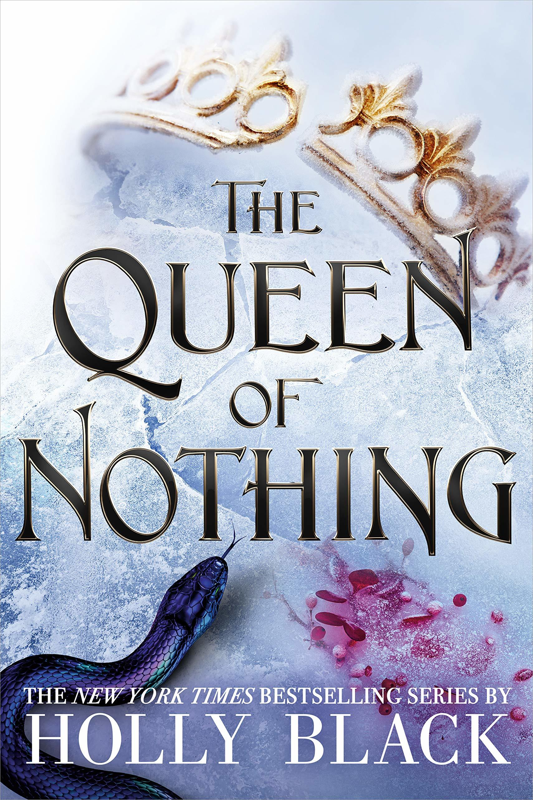

The Queen Of Nothing

˗ˏˋ ★ ★ ★ ★ ˎˊ˗
I think this book was a great ending to the Cruel Prince series. I really loved this series and it was a great introduction into fantasy for me and made me realise that it was my favourite genre. I also loved how it did not just focus on the romance but also on the political aspect.
I like that during exile Jude was still doing mercenary jobs. I also really liked the scene where she fought Grima Mog. I thought it was very nicely written and showed Jude's strategic mind.
I liked the writing of Taryn's plea for help but Jude never should've helped her as Taryn is a menace and does not deserve Jude and her help. I did like that Taryn killed Locke though as Locke is worse than Taryn. I think Jude accepting Taryn's plea shows her character and the loyalty she has for family.
I was very happy when Jude returned to Elfhame as she belonged there and was a great leader there. I also loved that Cardan knew she was Taryn and asked her if she got his letters. Side note: read the letters that Cardan sent because they are insanely adorable and you can see him slowly going crazy that Jude wasn't there.
I also liked when Jude was kidnapped by Madoc while he thought she was Taryn. I liked the way Oriana helped her escape Madoc because she knew Jude could protect Oak from Madoc's corruption. I also love that Cardan came to help save her as it showed his development from hating her to loving her.
I thought the prophecy and the serpent was a very interesting and great storyline. I liked how Cardan realised what the prophecy was about and was willing to sacrifice himself.
I loved when Jude stepped up and took control of Elfhame. I feel like she handled that situation wonderfully and that she was so well written. I also liked reading the conflict of what Jude was going to do with Cardan.
My favourite part was how Jude knew that Cardan wouldn't want to be controlled by her as a serpent so she made the sacrifice to kill the serpent. I thought this part really showed that she has evolved by going from wanting control and the throne to caring about what Cardan wants and thinks about. When he came out of the serpent I was so happy and I loved this twist.
I also loved the final confrontation between Madoc and Jude as it was such a good climax to the novel. She defeats him and proves that she deserves her position as the ruler of Elfhame.
I really liked that in the end Jude and Cardan's struggle for power is resolved and they become equals. I thought this was a great ending and I loved Jude and Cardan.
Overall I really loved this book series and it was a really good introduction to fantasy for me. I thoroughly enjoyed it and recommend it to anyone who wants something that is more about politics and fantasy.
Write a Review